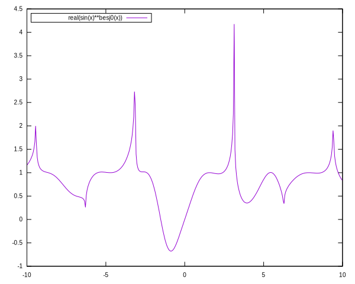

Pandoc + reveal.js + Gulp
Jall Profesor
16/11/2020
Note: This will only display in the notes window.

You can use bracketed spans to assign classes and attributes to text.
will result in:
Text wrapped in a <span> with class glowing
You can also use fenced divs to assign classes and attributes to whole blocks of content.
will result in:
… followed by a paragraph…
| …And | some | table |
|---|---|---|
| all | with | ugly |
| red | shadow | ✓ |
This slide has no corresponding Verticator bullet on the right …
… because the attribute data-visibility="uncounted" was set.
This means the currently highlighted bullet corresponds to the previous slide.
You can use shortcodes to add emojis:
Writing :alien: will result in 👽.
Unfortunately not all of the GitHub shortcodes seem to be supported.
Babam!
1n.pm/...